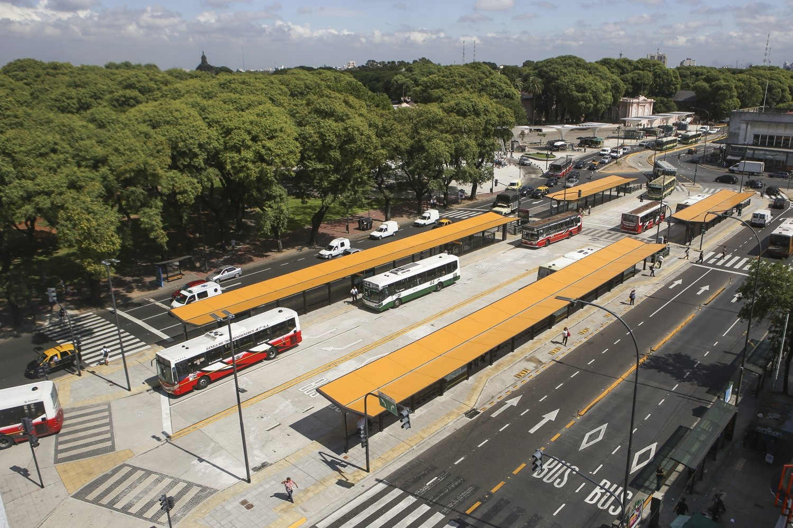

Líneas que paran en Lacroze
Mapa y Ubicación

La terminal está sobre la avenida Federico Lacroze, al lado de la estación de la Línea B del Subte y de la cabecera del Tren Urquiza. Cada línea tiene su parada identificada con el número correspondiente.
Dirección: Av. Federico Lacroze y Av. Corrientes, Chacarita, CABA.
Cómo llegar: combinando con el Subte Línea B o con el Tren Urquiza, ambos con parada directa en Federico Lacroze.

Distribución de paradas dentro del predio de la terminal. Cada andén está numerado y señalizado con la línea correspondiente.
Horarios y Frecuencia
Frecuencia aproximada de las líneas principales que operan en la terminal:
| Línea | Lunes a viernes | Fines de semana | Madrugada |
|---|---|---|---|
| 39 | Cada 6 min | Cada 10 min | Cada 25 min |
| 65 | Cada 8 min | Cada 12 min | Cada 30 min |
| 71 | Cada 8 min | Cada 12 min | Cada 30 min |
| 111 | Cada 10 min | Cada 15 min | Cada 35 min |
| 176 | Cada 12 min | Cada 18 min | Cada 40 min |
Las salidas de larga distancia se concentran entre las 7:00 y las 23:00, con algunas salidas nocturnas según el destino.
Accesibilidad
En la Terminal
- Rampas en plataformas y veredas
- Señalización con contraste claro
- Tipografía legible en carteles
En los Coches
- Espacios reservados para silla de ruedas
- Asientos prioritarios para mayores y embarazadas
- Anuncios sonoros de paradas (unidades nuevas)
Formas de Pago
- SUBE Tarjeta recargable, válida en todo el AMBA
- SUBE Digital Desde el celular con chip NFC
- Tarjeta contactless Débito o crédito directamente en el molinete
- Billeteras virtuales Mercado Pago, Ualá y otras con NFC